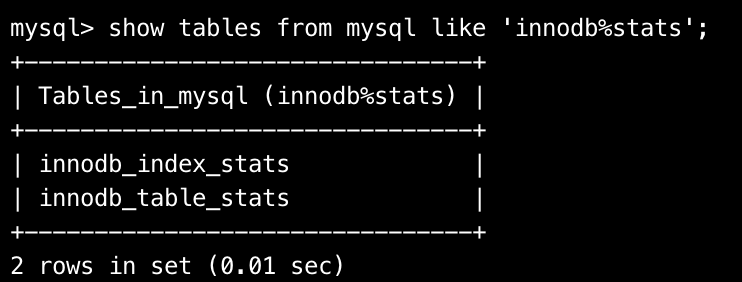

InnoDB统计数据是如何收集的 - 《MySQL是怎样运行的》ch13
Ch13 InnoDB统计数据是如何收集的
查询成本中存在一些统计数据，例如SHOW TABLE STATUS查看表的统计数据
本章聚焦于InnoDB引擎的统计数据收集策略
13.1 统计数据的存储方式
InnoDB提供了两种存储统计数据的方式，分别是永久性地存储统计数据和非永久性地存储统计数据
- 永久性：统计数据存储在磁盘上
- 非永久：统计数据存储在内存中
系统变量innodb_stats_persistent，用于控制统计数据存储在何处，5.6.6版本后。默认开启ON，即默认存储到磁盘上
创建表格时候指定stats_persistent属性指定统计数据的存储方式
13.2 基于磁盘的永久性统计数据
选择存储某个表以及该表格的统计数据到磁盘上，实际上将统计数据存储到两个表中中
innodb_index_stats存储了而关于表的统计书怒innodb_table_stats存储了关于索引的图片吗管控实际开
13.2.1 innodb_table_stats
看一下innodb_table_stats表中各个列的具体作用

- Databse_name：数据库名
- table_name：数据表名
- Last_update：最后更新时间
- n_rows：表中记录的条数
- clustered_index_size：表中的聚簇索引占用的页面数量
- sum_of_other_index_sizes：表中的其他索引占用的页面数量
n_rows统计项的收集
n_rows的统计值是估计值，InnoDB在统计一个表中有多少行记录时候：按照一定算法，从聚簇索引中选取一定叶子节点页面，统计每个页面中包含的记录数量，然后计算一个页面中平均包含的记录数量，乘以所有叶子节点的数量，结果就是表格的n_rows值
inndb_stats_persistent_sample_pages系统变量表示计算统计数据时候采样的页面数量clustered_index_size和sum_of_other_index_sizes统计项的收集
略，没看懂
13.2.2 innodb_index_stats
看一下innodb_index_stats表格字段的作用

- name类型表示归属
- Stat_name 统计项的名称
- Stat_value 对应的统计项的值
- Sample_siz 生成统计数量采样的页面数量
- Stat_description 对应的统计项的描述
对于一个索引有多个不同统计项，stat_name表示该索引的统计项名称
- n_leaf_pages 表示该索引叶子节点实际占用多少页面
- size表示该作用总共占用多少页面
- n_diff_pfxNN: 表示对应索引列中不重复的值有多少
13.2.3 定期更新统计数据
MySQL提供两种更新统计数据的方式
开启Innodb_stats_auto_recalc
该系统变量表示服务器是否自动重新计算统计数据，该功能默认开启；如果发生变动记录数据集超过了表格的10%，则自动重新计算统计数据
手动调用ANALYZE TABLE语句更新数据
手动调用以下语句计算统计数据
ANALYZE TABLE single_table;
13.3 基于内存的非永久性统计数据
当把系统变量innodb_stats_persistent设置为OFF后，之后创建的表的统计数据就默认为非永久性的
不过最近MySQL版本不怎么使用这种方式了
13.4 innodb_stats_method的使用
索引列中不重复的值对于MySQL优化器非常重要，计算索引列中一个值平均重复多少行；如以下两个场景
- 单表查询的单点扫描区间太多
- 执行连接查询时，如果设计两个表的等值匹配连接条件，且连接条件对应的被驱动表中拥有索引时，可以使用ref访问方法查询被驱动表